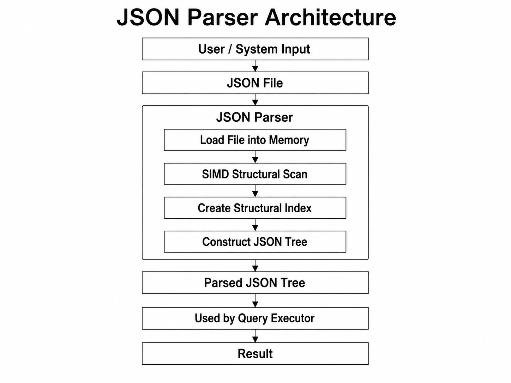
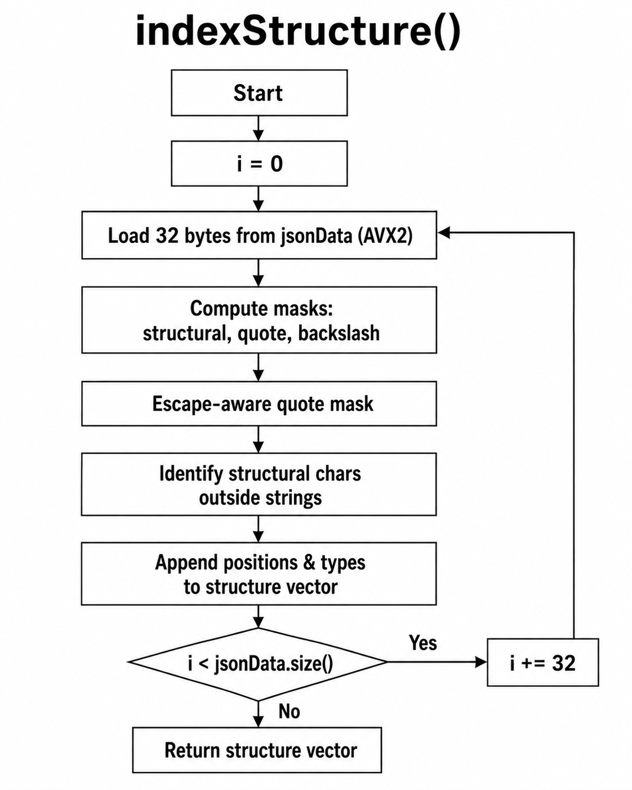

filter query parser diagram:
JSON Parser Architecture

JSON Parser
Converts JSON text into an internal data structure. The file is parsed once and reused for multiple queries.
SIMD Structural Indexing Control Flow

Algorithm References
The SIMD based structural scanning methods I used in the JSON Parser were developed with reference to the techniques described by Geoff Langdale and Daniel Lemire in Parsing Gigabytes of JSON per Second.
JSON Parser Pseudocode
indexStructure()
For every 32 characters in the JSON file:
Load the 32 characters using AVX2.
Use the high and low nibbles of each character
to identify structural characters.
Find all quote and backslash characters.
Remove quotes that are escaped by backslashes.
Find which characters are inside strings.
Ignore structural characters that are inside strings.
Add the remaining structural characters
and their positions to the structure vector.
Store the completed structure vector.findOddBackSlash()
Take the backslash bitmask.
Find the beginning of each sequence of backslashes.
Determine which backslash sequences have an odd length.
Mark the positions where an odd-length sequence ends.
Return those positions as a bitmask.findString()
Take the bitmask containing the valid quote positions.
Use repeated XOR and bit shifts to fill the bits
between each opening and closing quote.
This creates a mask showing which characters
are inside strings.
Return the string mask.Lookup Tables in indexStructure()
The indexStructure() function uses two 16-entry lookup tables
called lowTable and highTable. Each input byte is
split into two parts: the low nibble (lower 4 bits) and the high nibble
(upper 4 bits).
The low nibble is used to index lowTable, and the high nibble is
used to index highTable. The results from these two lookups are
then combined with a bitwise AND operation. This allows the parser to quickly
classify whether a character is a JSON structural character such as
{, }, [, ],
:, or ,.
Using these two lookup tables avoids checking every character one by one. Instead, the parser can process 32 bytes at a time with AVX2 SIMD instructions, making structural indexing much faster.
Indexer
Builds lookup structures so the entire JSON document does not need to be searched again for every query.
Query Parser
Parses dot-path, wildcard, array index, and
GET...FROM...WHERE queries.
Query Executor
Executes the parsed query against the JSON data and returns the result.
Query Language
Dot-Path Queries
School.students.name
Array index:
School.students[2].name
Wildcard:
School.students[*].name
Filter Queries
GET name FROM School.students
With a condition:
GET name FROM School.students WHERE year > 2
Multiple conditions:
GET name FROM School.students WHERE year > 2 AND grade >= 90
Supported Operators
=!=<<=>>=
Current Limitations
ORandNOTare not supported.- Parentheses in filter conditions are not supported.
- Users cannot currently choose the ordering of results.
Testing
Query Parser tests cover:
- Valid and invalid dot paths
- Wildcards
- Array indexes
- Filter queries
- AND conditions
- Invalid keywords and syntax
- Whitespace and malformed operators
Example Tests
| Query | Expected Result |
|---|---|
School.students[*].name |
Parses successfully |
School..students |
Parse error |
School.students[-1].name |
Parse error |
GET name FROM School.students WHERE year > 2 |
Parses successfully |
Edge Cases
- Missing keys
- Empty arrays and objects
- Null values
- Out-of-range indexes
- Negative indexes
- Deep nesting
- Invalid syntax
Sprint 1
Determine the parsing and query algorithms and create the first working versions of dot-path and filter queries using a small dataset.
- Design the Query AST structure.
- Implement the first version of the Query Parser.
- Determine how JSON input will be represented.
- Implement the first version of the JSON Parser.
- Design the first version of the Indexer.
- Define and implement the query search algorithm.
- Implement dot-path lookup.
- Create a small JSON dataset for testing.
Sprint 2
Sprint 2 focused on performance, additional query features, testing, and error handling.
- Added
ANDconditions to filter queries. - Improved performance for larger JSON files.
- Added query benchmarking.
- Improved error and edge-case handling.
- Added more parser and executor tests.
Sprint 3
Merge parsing, indexing, and query searching into one working program and obtain a larger dataset for testing.
- Connect the Query Parser to the Query Executor.
- Connect the JSON Parser to the Indexer.
- Connect the Indexer to the query search algorithm.
- Create the main program that coordinates all modules.
- Resolve any integration errors.
- find or create a larger JSON dataset.
- Add integration tests for both query formats.
- Verify output formatting and error messages.
Sprint 4
Add a user interface, fully test the final system, fix remaining issues, and prepare the project for the demo.
- Add a command-line or user interface if applicable.
- Test valid and invalid JSON input.
- Test valid and invalid query syntax.
- Test query accuracy and edge cases.
- Run performance tests using the larger dataset.
- Fix remaining issues and integration problems.
- Finalize documentation and setup instructions.
- Prepare for the final demo.